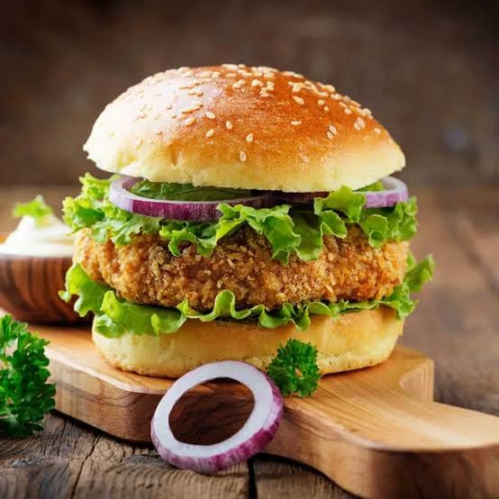

Veg Burger
⭐⭐⭐⭐⭐ 4.8 Rating | ⏱ 30 Minutes | 🍽 2 Servings
Category
Fast Food
Difficulty
Easy
Calories
420 kcal
Cooking Style
Pan Fried
📋 Ingredients
- 2 Burger Buns
- 2 Veg Patties
- 2 Cheese Slices
- 1 Tomato (Sliced)
- 1 Onion (Sliced)
- Lettuce Leaves
- 2 tbsp Mayonnaise
- 2 tbsp Tomato Ketchup
- 1 tsp Butter
- Salt and Pepper (Optional)
🍳 Required Utensils
- Frying Pan
- Spatula
- Knife
- Cutting Board
- Serving Plate
📖 Introduction
A Veg Burger is a delicious fast-food snack made with crispy vegetable patties, fresh vegetables, cheese, and soft burger buns. It is easy to prepare and perfect for breakfast, snacks, or parties.
🔬 Principle
The burger patty is cooked until crispy while the buns are lightly toasted. Fresh vegetables and sauces are layered to create a flavorful and balanced burger.
👨🍳 Procedure
- Heat a pan and add a little butter.
- Toast the burger buns until golden.
- Cook the veg patties according to instructions.
- Spread mayonnaise on one bun.
- Spread ketchup on the other bun.
- Place lettuce on the bottom bun.
- Add the cooked veg patty.
- Place a cheese slice over the patty.
- Add onion and tomato slices.
- Sprinkle salt and pepper if desired.
- Cover with the top bun.
- Serve immediately.
⚠ Precautions
- Do not overcook the patty.
- Toast buns lightly.
- Use fresh vegetables.
- Serve immediately to maintain crispness.
- Handle hot patties carefully.
💡 Chef Tips
- Add jalapeños for extra spice.
- Use whole wheat buns for a healthier option.
- Add crispy fries as a side dish.
- Serve with chilled soft drinks.
🥗 Nutrition Facts
| Nutrient | Amount |
|---|---|
| Calories | 420 kcal |
| Protein | 14 g |
| Carbohydrates | 42 g |
| Fat | 20 g |
🍽 Serving Suggestions
- French Fries
- Tomato Ketchup
- Mayonnaise Dip
- Cold Drinks
- Fresh Salad
🌿 Health Benefits
- Vegetables provide vitamins and minerals.
- Cheese supplies calcium and protein.
- Lettuce and tomatoes add dietary fiber.
- Whole wheat buns increase fiber intake.
- Enjoy in moderation as part of a balanced diet.
✅ Result
The prepared Veg Burger should have crispy patties, soft toasted buns, fresh vegetables, melted cheese, and flavorful sauces. It should be served hot for the best taste and texture.
🎥 Watch Recipe Video
Learn the complete recipe by watching the step-by-step video.
▶ Watch on YouTube